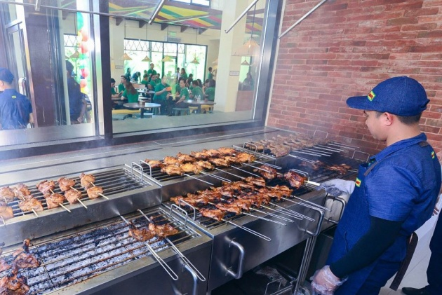

About Us
Mang Inasal, the Philippines' Grill Expert, is known to customers as the brand that delightfully serves Ihaw-Sarap food and Unli-Saya experience for the past 20 years.
From a Hiligaynon word for Mr. Barbecue, Mang Inasal was established on December 12, 2003 in Iloilo City by Edgar “Injap” Sia II. Apart from the delicious, craveable taste of its Chicken Inasal that has won the hearts of Filipinos, Mang Inasal was also the first to offer unlimited rice. Over the years, the brand has garnered numerous awards as a fast-growing local food company, an outstanding quick service restaurant (QSR), and an excellent Filipino franchise.

Mang Inasal eventually became part of the portfolio of Jollibee Foods Corporation (JFC) in April 2016. Since then, Mang Inasal has observed the same high standards of Food, Service and Cleanliness that all JFC brands have been known for. At Mang Inasal, this commitment is applied across the business, assuring customers of food quality and safety that they can enjoy whether dine in, takeout, or delivery.
To date, Mang Inasal operates over 570 stores nationwide, 97% of which are franchised.
All these efforts enabled Mang Inasal to land the top 4th spot among QSRs in the country and as the number one inasal destination in Manila, according to Southeast Asia's leading travel inspiration platform, TripZilla.
As part of continuously providing Unli-Saya to its customers, Mang Inasal's presence on social media has been intensified. In 2022, Mang Inasal Nation, the first restaurant-managed social community, was launched. With over 100,000 members, the exclusive Facebook Group has brought the brand and customers together in one platform.
Mang Inasal has maintained a strong portfolio that includes the best-tasting 2-in-1 sa Laki, Tagos ang Ihaw-Sarap Chicken Inasal, Pork Barbecue, Extra Creamy Halo-Halo, and Palabok, continuously delighting its growing customer base whether via dine-in, takeout, or delivery.
Today, Mang Inasal continues its winning tradition of excellence to provide its customers the best Ihaw-Sarap food and Unli-Saya experience wherever and however they want to enjoy it.